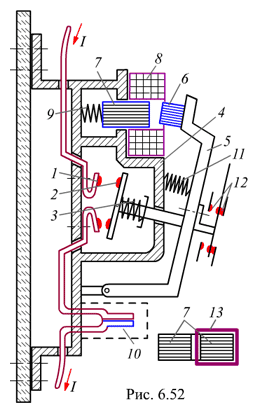

6.6.3.2. Магнитные пускатели
Наиболее распространенные магнитные пускатели (объединяющие контакторы и тепловые реле) серий ПМЕ, ПМА, ПА, ПВМ с управлением на переменном токе имеют реверсивные и нереверсивные исполнения и предназначены для управления электродвигателями.
Механическая износостойкость пускателей составляет (5...16)106 включений, частота включений в час 600…1200. Номинальные коммутируемые токи при напряжениях 380/500 В от 3/1,5 до 146/80 А.
Конструктивная схема пускателя переменного тока представлена на рис. 6.52.
Пускатель состоит из неподвижных 1 и подвижных 2 мостиковых контактов, контактной пружины 3, изоляционной стенки дугогасительной камеры 4, траверсы 5, якоря 6, магнитопровода 7 и катушки 8 тягового электромагнита, амортизационной пружины 9, теплового реле 10, возвратной пружины 11, вспомогательных контактов 12 и короткозамкнутого витка 13, расположенного на магнитопроводе 7. Для уменьшения потерь в сердечнике на вихревые токи и перемагничивание магнитопровод и якорь собраны из листов электротехнической стали.
Сила, с которой якорь контактора притягивается к сердечнику, пропорционален квадрату магнитного потока, т. е. Fс @ Ф2, а магнитный поток Ф изменяется по закону синуса. Из этого следует, что сила притяжения за один период переменного тока достигает дважды амплитудного и нулевого значений, вследствие чего возникает вибрация якоря и подвижных контактов. Для уменьшения вибраций, а также возникающего при этом неприятного гудения, магнитопровод 7 снабжается короткозамкнутым витком 13, охватывающим часть его сечения (см. рис. 6.52). Часть основного магнитного потока пронизывает короткозамкнутый виток и наводит в нём ЭДС. ЭДС вызывает ток, а его магнитодвижущая сила - магнитный поток, сдвинутый по фазе относительно основного магнитного потока. Дополнительный магнитный поток вызывает силу, удерживающую якорь в притянутом состоянии, когда сила притяжения от основного потока равна нулю.
После отключения катушки контактора от источника питания якорь 6 (и вспомогательные контакты 12) под действием силы тяжести подвижной системы и пружины 11 возвращается в исходное положение, а контакты 1 и 2 размыкаются.